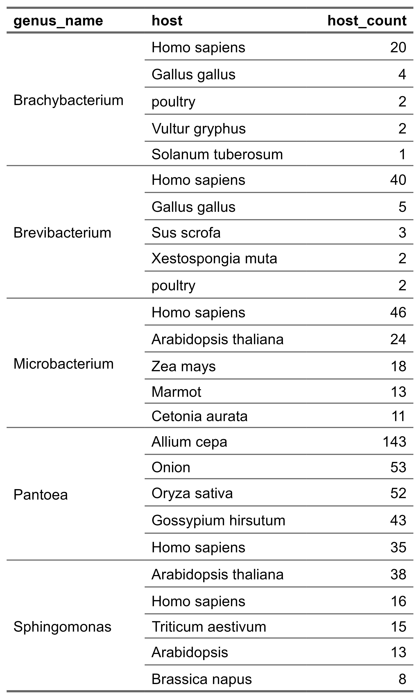
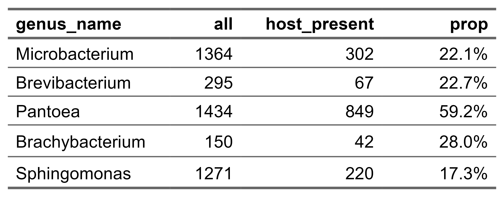
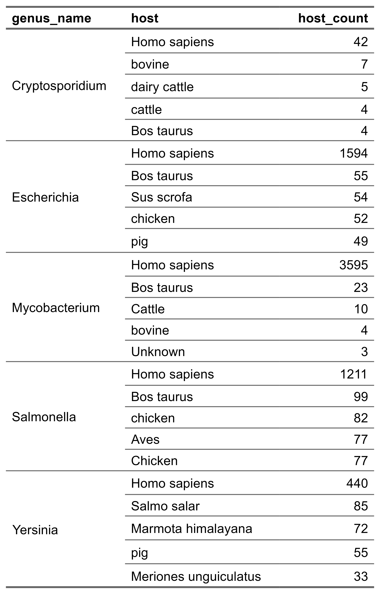
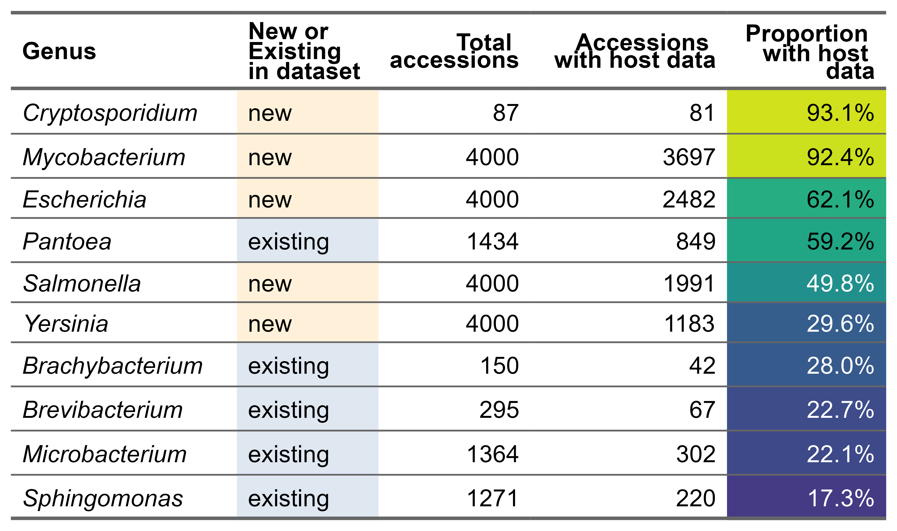
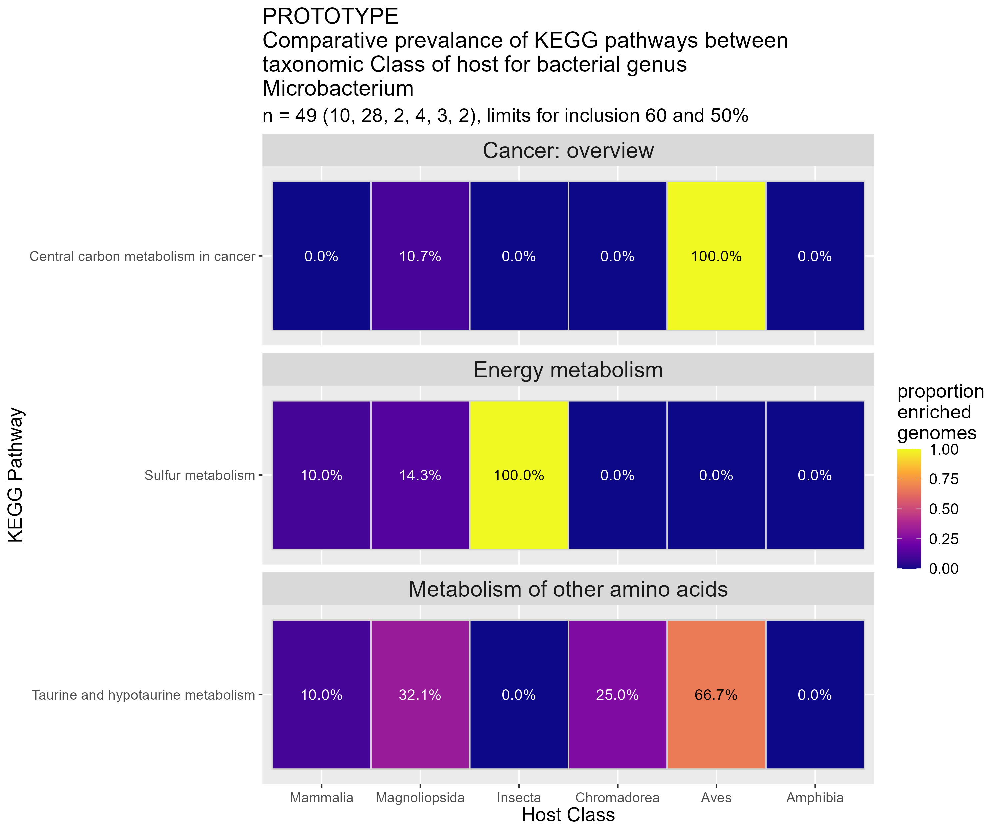

Host taxonomic Class | Brachybacterium | Brevibacterium | Microbacterium | Pantoea | Sphingomonas | Total |
|---|---|---|---|---|---|---|
Magnoliopsida | 2 | 1 | 28 | 16 | 32 | 79 |
Mammalia | 3 | 6 | 10 | 5 | 3 | 27 |
Aves | 4 | 2 | 3 | - | 1 | 10 |
Insecta | - | - | 2 | 2 | 1 | 5 |
Chromadorea | - | - | 4 | - | - | 4 |
Table displays host information after parsing null fields and environmental samples. The hosts' taxonomic Class was obtained from the NCBI through the entrez API using the rentrez R package. This table is a subset, taken where the total number of accessions is greater than 3. This was created by combining the recent dataset with older data pertaining to samples I had run through EggNOG-mapper, as such the 5 new genera (Cryptosporidium, Escherichia, Mycobacterium, Salmonella and Yersinia) do not feature here. In 5 out of 136 instances, I had downloaded opposing accessions between downloads. i.e. I had downloaded GCF_1234 months ago, and downloaded GCA_1234 for this data, they are identical files, but both naming conventions exist on the NCBI database, leading to the error. For this data I cut the GCA/F to find this, explaining why it appears this way in the data. | ||||||
Introduction
This week I am continuing from the work I began during week_4. Specifically, I am still trying to solve major problem 1 (refer to dissertation_plan.pptx).
Methods
Exploration of groups of genera to categorise basic quality (9th to 10th)
I have all of the data I need to analyse and characterise. I will create tables or graphs exploring the bredth of hosts apparent in the 5 past genera. I may chose to make a dashboard of this information for the practice. During this process, I will run into the sub-issue that the quality of host information is … bad. I need to create groups by class like “mammalia”, “aves”, whatever the one for fish is. But some hosts are in latin, some are in english, some are non-specific, it is going to be… interesting.
I decided that because ../../../00_scripts/R_scripts/02_analyse_existing_genera.R had 170 lines, that the rest of the analysis should be performed in a new file for clarity. So I created ../../../00_scripts/R_scripts/02.2_analyse_existing_genera_extended.R. In this file I read back in the data, having transformed it using a SQL command. It is now a count of the top 5 hosts for each genus. I then used R to make a flextable, to present this data, this is Figure 1.
I plan to build on this by fleshing out the results section, specifically better describing Figure 1. To build on the work, I will:
run another query to figure out what proportion of samples have host information by genera
enrich the host information with information on higher taxonomic assignment, which may have to be done partly manually due to the …inconsistent nature of the host information.
I went on to answer point 1 in Section 3. However, point 2 is a larger object and I am going to create another methods and results section in order to better separate the two parts of this area of the project.
Exploration into Class distribution information as a more specific qualiy metric (10th to - 14th)
To answer point 2: “enrich the host information with information on higher taxonomic assignment, which may have to be done partly manually due to the …inconsistent nature of the host information.”, I first wish to display all the hosts in a paginated table format. This will allow a long list to be displayed in a compact format. This table-type would not work in word, so may prove difficult for the write up. I am considering adding a filter so that the end-user can select which genera they would like to observe, however, this may be too complex for me.
I first did a paginated table, ?@tbl-paginated. This displays all of the hosts for all 10 genera non-deliminated. The paginated nature means that all 778 hosts can be displayed without being massive.
There are two options for deriving the class data:
purely manual - first remove variation caused by different casing, e.g. “bat” and “Bat”. Then, manually create a table of classes
use NCBI entrez API - this will only work with scientific names, so I may have to go and manually change basic names to scientific names, or just manually assign those ones
I am leaning toward the 2nd option. I can remove any values with only one word and either discard or manually assign those ones. I used the rentrez manual to make lines of code to call the API.
It should be noted that the more modern REST API can be used to the same effect. However, I decided to use rentrez because:
I wanted to practice with a different package
the REST API call “/taxonomy/taxon/{taxons}/dataset_report” returns a large zip file with much more information than I require and would be more painful to try and store
the entrez API returns a “division” attribute that I find more helpful than the Class taxonomy level, as it has fields such as “plant or fungus” or “mammal”
I had to rate limit this call because I do not want to overwhelm the older API. I introduced a “Sys.sleep(0.05)” into the loop as advised by the rentrez manual. After the for loop has concluded I will have a dataframe in R with the host name, the internal taxonomy ID in the internal NCBI systems, the division and the full taxonomy record converted to json. However, not all of the columns will be done, as there are many values it will not be able to find in the system, i.e. “bannana”(I did not make a spelling error there, that is just how it is in the system) and “mushroom”.
After the loop finished, I had the frame, I decided to save the values that did return to one table in the SQL database and the values that did not to another. I did some exploration and the call managed to identify roughly 75% of the host names, they are in groups that may or may not be helpful, however, I can work with it. This came out to 528 done automatically. Which means my non-returners table has 180 values in it, I immediately identified that there were still some “not provided”, “not collected” variations that had slipped through the cracks, but those will be easy to dispose of. It should be noted that the vast majority of environmental samples did not make it to this point as there have been many filter steps selecting purely for host, which is a field usually left empty when isolation source is environmental. There are some though, interestingly. This means I will likely need another table for environmental sources for comparison with hosted sources. For future reference, my current list of 7 group names (well, there will likely be multiple levels so I can compare inside mammals etc, but the top level stuff) are: environmental, plants and fungus, invertebrates, fish, amphibians, reptiles, birds, mammals.
So, next steps:
look at the list of unprocessed hosts for quick wins, i.e. “bat = mammal” or other values that can quickly be assigned a scientific name, like “fish (rainbow trout)”
once those are given a scientific name they can be run through entrez and added to that table, removed from the non-returners table
then I will just keep workind down the list until the table is empty
then I will have to figure out how to get the group names to come out (that might be a bit of a biggie). I have looked around a bit, and the two contenders are EoL (Encyclopedia of Life) and GBIF (Global Biodiversity Information Facility). They both have taxonomic ladders that I can use for group names, which I will need to analyse which has more utility for me.
then I can finally do the dashboard comparing group sizes etc once a final format is decided
Manual processing (2025-06-11 to 2025-06-12)
I started by removing values that could not be given a host, like environmental ones, or vague ones like “animal” or “wildlife” that I could take but… how would I categorise them?
While I was doing this, I noted all of the variations on how someone could write “homo sapiens” added them to a list, and gave them the alias “homo sapiens”. I then targeted “bats” because I could never get them to work automatically in testing. Then, I moved onto trying the REST API on the remaining duff values to see how many more I could do automatically. It would have been faster, but there was a rate of false positives that I could not accept. For example, “mushroom” connecting to “mushroomtongue salamander” or “mushroom-killing salmonella”, which would place it in the complete wrong class. Thus, I decided to just do the duff list manually. I found one value for the “african clawed toad”, which is a known vector of chytrid, maybe it would be fun to compare that with the 10 samples from last year. There were more I needed to cut, for example “plant” and “sponge” because whilst they did have a host, I could not put it in a Class, so would not be able to use them unless I did broader comparisons, like “inverts vs verts”.
To process the duff list manually, I used a combination of the NCBI taxonomy browser, wikipedia and google search, depending on the quality of the data, or what problem made it duff in the first place. i.e. If it was an obvious thing like including the common name after the fact in brackets [i.e. something like “raphanus sativus var. flamboyant 5”, the “var. flamboyant 5” stopped it from reading], so I could just take the correct bit and put that in the taxonomy search. For issues of nomenclature I used Wikipedia, to find the most specific valid taxonomic level. For example, if there were a common name, like vole, I could use it to get to the family voles are in and look that up. Finally, for issues of spelling or using an outdated name, I used google to find the correct name / spelling and then went to the correct wikipedia page so I could get the correct taxonomy level name and pass that to the taxonomy browser. For example, something like “bannana”, however not this exact one, because the misspelling is rather obvious. Having corrected these entried, I ran an entrez search to retrieve the taxonomy data, and added the records to the table “host_reports”.
Using the SQL code below, through R (of course), I extracted the Class-level information to allow for groupings:
SELECT host_value, report_data ->'Taxon'->>'ScientificName' as taxon_name, report_data ->'Taxon'->>'Rank' as taxon_rank, (value->>'ScientificName') as class_name, (value->>'TaxId') as class_tax_id FROM host_reports, LATERAL jsonb_each(report_data->'Taxon'->'LineageEx') as t(key, value) WHERE value->>'Rank' = 'class';
I then combined this with the accession data that I had generated last week, to analyse the distribution of host Class by sample genus. I created a range of exploratory tables in “02.5_class_analysis.R” that increasingly added levels of complexity, and with names that got increasingly funnier each time I had to think up a new one. In the end, I decided to just output the raw data, to the file “03_outputs//host_evaluation/accession_to_host_class.tsv”. Any tables I do in this notebook will be generated here (though, I may borrow the code in case I want to re-use one of those specific tables). For the output tables and distributions, including my interpretations, see Section 3.2.
heatmaps (2025-06-15)
Table 2 presents that I might be able to construct a prototype for a host-based heatmap. I see these heatmaps as being 1 per bacterial genus, with the columns to compare against being host Class, with the cells of course being KO pathways, as it was for the ones I did last year. I would like to do the prototype on the genus Microbacterium, because it has accessions to be found across all 5 of the top 5 classes I currently have annotations for. I recognise, however, that some many of these are in very low numbers that would be hard to prove statistical significance. This is why I call it a prototype, it may show something, but the results are largely not to be taken as final or meaningful, more a proof of concept for later work.
I created a script (00_scripts/R_scripts/02.7_prototype_heatmaping.R) that adapted code I generated last year for bacterial-genus-based delineation to the new class-based system. It is the full 3 files, it brings in the output from 02.6_compare_with_KO_data and pivots it so that it is in the right format, it also makes the values into proportion based on group size (i.e. map100 is found in 1/2 Amphibian samples, thus the proportion for that cell is 0.5). I have to manually add in the data for the Bangor-made samples. Finally, they are run through the adapted heatmap code, specifics are in the file and will have to be fully explained in the dissertation write up. This is so that the code exists for after I answer Major problem 2 and wish to run the full pipeline. Perhaps I should concatenate all the files into one under “full_pipeline” or similar, but I have run out of time this week.
Results
Exploration of groups of genera to categorise basic quality (9th to 10th)

This flextable, shows information on the top 5 hosts for each genus, there is little overlap between them, however, a species of note is Homo sapiens, which appears significantly in all groups. More of the species are plant origin than animal origin, so perhaps a good level of comparison would simply be “plant vs animal”. It should be noted that the proportions between genera could be misleading, the group sizes for each will be different and this table is not a comparison, merely outlining where the most samples are. This is supported by Figure 2.

Figure 2 shows that for 4 of the 5 genera, only about 20% have useable host fields. Meaning roughly 80% of host fields are “NA”, “null”, “missing” or the many permutations I had to parse out manually. The only one to break this formula is Pantoea, with close to 60% useability rate, quite the anomaly. This means Pantoea is once again massively overrepresented. This does show quite well why major problem 1 is such in the first place. For example, for Brevibacterium there are 67 samples with a useable host field, which is not many for statistical significance or large group sizes which would help validate the results. I would like to compare with a more studied Genus, Escherichia, (coming from E. coli) to see what happens in a more well-studied genus.

Figure 3 shows that for 3 of these new genera, the amount with a host greatly exceeds that of the existing genera of study. These 3 are Salmonella, Mycobacterium and Escherichia. This is ideal as these genera will have higher chances of more varied host metadata. Interestingly, humans and mammals are massively over-represented in these genera, with “Homo sapiens” appearing in the top spot for all genera. A higher total is ideal, however, the proportion may be lower than in the existing samples and this does not tell us about the distribution between Classes.

Figure 4 shows that in 3 out of 5 cases, the new genera do have a higher proportion than the existing, excluding Pantoea. The value with the highest proportion is Cryptosporidium, I am taking this as anomalous, because there are, surprisingly, only 87 samples on the NCBI database, so this high percentage could be due to chance. For the genera with more samples, the download capped at 4000 due to API limitations to avoid congestion. Thus, these are only samples of larger datasets, however, if I had taken all the samples, it would have taken hours to run the analysis, so I believe 4000 is a significantly large sample. This is good information to know in terms of data exploration. However, if this greater proportion is caused by most samples being taken from mammals, and there is not a sufficient taxonomic variance, then these genera are not of use. The best signifier that a genus’ host information is of use to me is variability in host Class.
Exploration into Class distribution information as a more specific qualiy metric (10th to 13th)
table no longer works shows all 778 hosts across 78 pages. This allows the end-user to explore the range of hosts for these 10 genera. Unsurprisingly, Homo sapiens has the most samples at 7039, massively above the 2nd place Bos taurus at 184. One can use the filter feature to search, for example, typing “homo” will lead one to see the range of ways people have wrote that down. I would say that the hosts are skewed towards plants and mammals, with variations on chicken making up most of the bird samples and very few representatives from amphibians, reptiles and invertebrates.
Firstly, Table 1 shows the clear mammal-bias in the data, with 8,531 total accessions split between the 10 genera. For all excluding Microbacterium, Pantoea and Sphingomonas it is the largest host Class. The second Class group is flowering plants, Magnoliopsida, which is the largest group for the aforementioned 3 genera. Mammalia and Aves are the only Classes that see contributions from all 10 genera. For the other major groups (fish, amphibians, reptiles, inverts) that I have not yet mentioned, there are significantly less. Mammalia, Magnoliopside and Aves have 8531, 992 and 534 and are 1st, 2nd and 3rd in terms of size. This contrasts the remaining 4, Acinopteri (ray-finned fish) are 4th largest, however have a comparitively lower 173 total accessions, in 5th and 6th there are insecta and amphibia at 136 and 83 total samples respectively. Finally, reptiles (lepidosauria) is in joint 10th place with only 7 total samples. It should be noted that between the 5 genera that I have previously studied, before adding in the more common 5, there are only 2 accessions with amphibian hosts. The bacterial genus Microbacterium is the most consistent, with accessions of that genus appearing in 15 of the top 20 host Classes.
Table 2 is similar to Table 1, it stems from the same data, but is filtered to only include accessions I have both host information and an annotation for. Firstly, contrasting Table 1, Magnoliopsida has overtaken Mammalia as largest group. However, now the new 5 genera have been filtered out both of the aforementioned Classes have annotations in all bacterial genera. The remaining groups above 3 total samples are birds, insects and roundworms. Grand total there are 136 accessions with hosts that I have annotations for, this is out of 552 total annotations, meaning there are 416 with either an invalid host field (missing, NA, NULL, etc) or are environmental samples. This proportion is just over 75%, meaning just less than a quarter have ideal host information. This is on the low end, refering to the scale set out in Figure 4 for individual genera.
TODO:
maybe show proportions, but not through a pie chart, like I did in the last results section, specifics TBD
heatmap of what I got now? I could def do hosted vs environmental, but trees vs mammals wouldnt make the cut for parametric statistics, maybe worth a go anyway
New phase of prototype heatmap: host-based ones (2025-06-14 to 2025-06-15)
Table 2 is a good proof of concept that I can get data together to do a prototype host-based heatmap. I call it prototype because I am not sure what the final format will be, so will go over multiple iterations. For example, I can try [hosted vs environmental], [animal vs plant hosts] or perhaps [mammals vs plants]. I may try a class-based comparison, though I do not have confidence in the groups with missing values. There will likely be more in the future once I have addressed Major Problem 2 and gotten more samples.
I may also want to do a similarity heat map as a part of this. This would confirm whether I can or cannot compare all genera for a host Class with all genera for another (e.g. Mammalia vs Magnoliopsida with the genera along the bottom… but the Class needs to be on the bottom, yeah, this may not be possible now I think about it), or whether I will need to do heatmaps inside of both bacterial genus and host class (e.g. Pantoea-Mammalia vs Pantoea-Magnoliopsida). Perhaps I could supplement the current data with targetted eggnog-mapping (deliberately selecting accessions with hosts from the under-represented Classes to allow for the more specific analyses I am not currently capable of).

The outputs from @fig-heatmap should not be taken seriously. The group sizes, as shown in the subtitle are inadequately small, and I lowered the limits for inclusion to get three pathway IDs. From the dataset, only 3 pathways could be found, this is explained by a lack of variation due to small groups. Two of the three are related to metabolism. If these were reliable results I may build on this by looking into what Taurine and hypotaurine are and how they relate to birds, trees, worms and mammals, but not insects or amphibians. The third pathway is related to “central carbon metabolism in cancer”, my supervisor told me that this does not mean the bacteria causes cancer, but exhibits a process that is characterised in some cancers, or something like that.
Conclusions
Firstly, I would like to state on the course of this investigation I have developed stages of a pipeline that can be collated to properly sort host information and permit heatmaps grouped by host Class. As I have demonstrated, the number of accessions containing valid host information is low, usually under 50%. This value is gotten to after I have had to remove many accessions in waves, as follows:
info doesn’t exist or needs to be painstakingly parsed out due to varients on “missing”,
most samples are environmental [this is good for a host vs environment comparison but not for more specific comparisons],
bad quality meaning I need to do a lot of manual fixing to find good tax_ids to match to a class,
heavy human and mammal bias meaning that reptiles especially (for these genera) are waylaid to only 7 values, basically whats left after that is next to nothing.
It might be ideal to bring in specific bacterial lineages that are known to appear in reptile microbiomes to allow for more specific comparisons between reptile hosts and e.g. amphibian hosts.
Another conclusion is that with a data-set this small, I would not be able to perform the Class comparisons I might wish, perhaps a more realistic goal is [hosted vs environmental] or [animal vs plant hosts] at a more broad taxonomic level, perhaps [mammals vs birds] could work. This is because I do not believe I can call a host-based comparison valid unless all bacterial genera are present in all host Classes, it means that any correlations seen (or not seen) would be due to the absence of pathways that may be common across genomes in a certain genus, but do not appear due to the gaps. I do not believe it possible to infer anything from the results of the prototype heatmap. However, I do conclude that the code is correct and prooves as a good proof-of-concept that the code will function once I am able to get more data. It can also be adapted to any other host-based analyses I may want to do.
Finally, I conclude that the first major problem of few samples having adequate host information has been addressed. The 552 samples I had downloaded were a subset of all the accessions available for these genera, as chosen by GTDB-Tk analysis last year. This was ideal at the time as it was a way of deciding a manageable amount of samples while I was still unfamiliar to the area of research by chosing the most evolutionarily similar. Now, it is apparent I am going to need as many as I can get, in order to try and get the major Classes to a respectable amount of accessions. This might also help increase the proportion of samples with an ideally filled out host field, though that is not guaranteed. This leads into major problem 2, running all those accessions through EggNOG-mapper on hawk can be better automated, but will continue to take (what I find) an unacceptable amount of time. This is where my next steps will take me. However, I will first write up this phase of work so that I do not have that to do in half a year when I have forgotten what I did
[good start, but Ill def give it a thrice-over when I write it up in the dissertation proper, it needs to flow better, also, its missing something, though Im not sure what, Ill need to read it through in final .html format to be able to read it all properly]
plan, have I covered all of it?:
have I answered major problem 1? Yes, I now have a range of hosts, and a way to group them and the ability to use them, should I want to make them the groups for a new heatmap
bring up again that host info is shockingly bad (major culls: 1. info doesnt exist or needs to be painstakingly parsed out due to varients on “missing”, 2. most samples are environmental [good for a host vs environment comp but not for more specific stuff], 3. bad quality meaning I need to do a lot of manual fixing to find good tax_ids to match to a class, 4. heavy human and mammal bias meaning that reptiles especially [for these genera] are waylaid to only 7 values, basically whats left after that is next to nothing, so maybe another next step is to bring in nt only more reptile specific lineages, but just more data in general.)
write up as Chapter 1 of the Dissertation
anything that can be concluded from all the results
Maybe bring in some more amphibian or reptile leaning lineages
“with a dataset this small, I would not be able to perform the clade comparisons I might wish, perhaps a more realistic goal is [hosted vs environmental] or [animal vs plant hosts] at a more broad taxonomic level, perhaps [mammals vs birds] could work”
need more reptiles, reptile specific bacteria?
talk about making “02.FULL_HOST_PIPELINE.R” to summarise the pipeline
add a paragraph once heatmap stuff is done
Scientific papers
Genome analysis of multiple pathogenic isolates of Streptococcus agalactiae: Implications for the microbial “pan-genome” (https://www.pnas.org/doi/abs/10.1073/pnas.0506758102)
ok, now “pan-genomes” is interesting - here is a link to a related blog post or something about them https://www.nature.com/articles/d42859-020-00115-3
it is kind of close to what I want to be doing, its like discovering all the possible genes found in the distinct strains of a bacterium. Discovering the core genes and the rarer ones. I could definitely look into something like this.
that second link mentions something like “1 reference genome is not adequate to represent the genetic variation of a species”. maybe I could compare reference genomes? the core and the dispensible genome?
**“Pangenomes** represent the genomic variation naturally found within a population, commonly a species. They may be gene-oriented and model the presence and absence of genes within the population, or they may be sequence-oriented and focus on the variation of genomic sequence including single-nucleotide variants, insertions, deletions, and structural variants for the given population.” - gene-oriented could be interesting, modeling how different conditions can broaden the pan-genome for species.
“pangenomes are often … species level, we can also build pangenomes for specific populations such as for … broader populations such as a species, phylogenetic clade, or an ecological community” - ecological community, perhaps I can model a pan-genome of whole function for the Bangor samples, see what all the genes they do are?
It says they are like an upgraded or better reference genome - maybe I could create like a library of these to use in referencing? that idea might be too ambitious.
it keeps bringing up “core” and “accessory” genome, which is definitely something I could look into as it is irrespective of low-quality metadata.